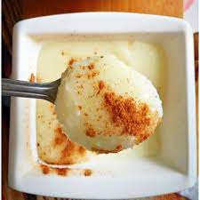

Semolina Pudding Recipie

Semolina Pudding: A Satisfying Treat
This pudding is a delightful dessert that embodies simple, comforting flavours
Made with semolina, milk and a hint of vanilla, this dpudding boasts a smooth, creamy texture that is both satisfying and indulgent
Ingredients
- Semolina
- Milk
- Sugar
- Vanilla extract
- Butter
Steps to Make
- heat the milk until it is warm
- add semolina and stir
- add sugar and stir until the mixture thickens
- add vanilla extract
- continue cooking until mixture reaches desired consistency